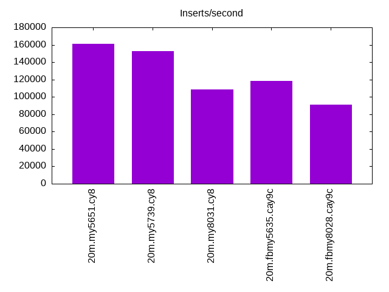
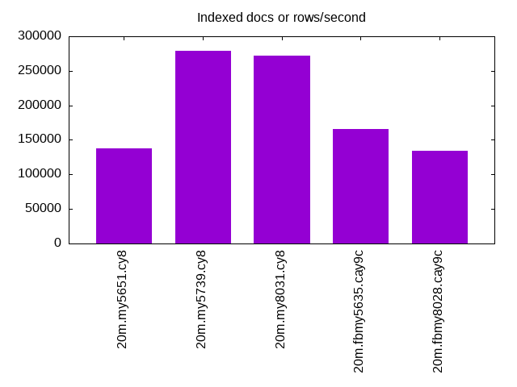
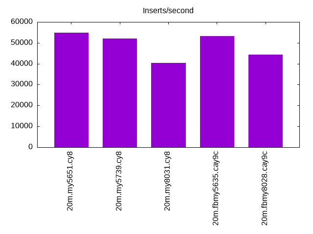
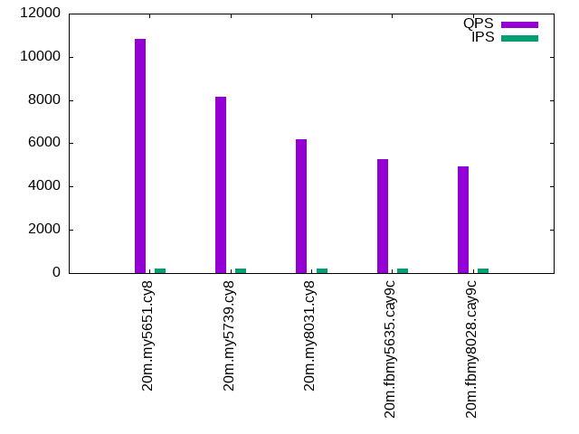
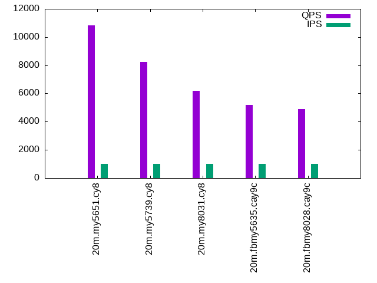
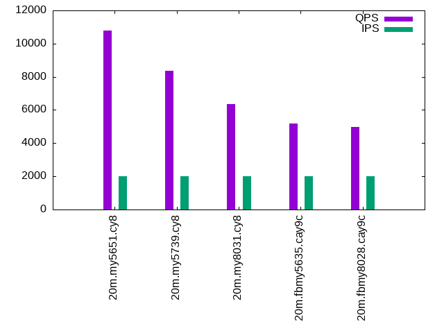

This is a report for the insert benchmark with 20M docs and 2 client(s). It is generated by scripts (bash, awk, sed) and Tufte might not be impressed. An overview of the insert benchmark is here and a short update is here. Below, by DBMS, I mean DBMS+version.config. An example is my8020.c10b40 where my means MySQL, 8020 is version 8.0.20 and c10b40 is the name for the configuration file.
The test server has 8 AMD cores, 16G RAM and an NVMe SSD. It is described here. The benchmark was run with 2 clients and there were 1 or 2 connections per client (1 for queries, 1 for inserts). The benchmark loads 20M rows without secondary indexes, creates secondary indexes, loads another 20M rows then does 3 read+write tests for one hour each that do queries as fast as possible with 100, 500 and then 1000 writes/second/client concurrent with the queries. The database is cached by the storage engine and the only IO is for writes. Clients and the DBMS share one server. The per-database configs are in the per-database subdirectories here.
The tested DBMS are:
The numbers are inserts/s for l.i0 and l.i1, indexed docs (or rows) /s for l.x and queries/s for q*.2. The values are the average rate over the entire test for inserts (IPS) and queries (QPS). The range of values for IPS and QPS is split into 3 parts: bottom 25%, middle 50%, top 25%. Values in the bottom 25% have a red background, values in the top 25% have a green background and values in the middle have no color. A gray background is used for values that can be ignored because the DBMS did not sustain the target insert rate. Red backgrounds are not used when the minimum value is within 80% of the max value.
| dbms | l.i0 | l.x | l.i1 | q100.1 | q500.1 | q1000.1 |
|---|---|---|---|---|---|---|
| 20m.my5651.cy8 | 161290 | 137671 | 54945 | 10850 | 10817 | 10779 |
| 20m.my5739.cy8 | 152672 | 279167 | 51948 | 8152 | 8227 | 8356 |
| 20m.my8031.cy8 | 108696 | 271622 | 40404 | 6193 | 6197 | 6356 |
| 20m.fbmy5635.cay9c | 118343 | 166116 | 53333 | 5278 | 5185 | 5199 |
| 20m.fbmy8028.cay9c | 90909 | 134000 | 44346 | 4915 | 4907 | 4989 |
This lists the average rate of inserts/s for the tests that do inserts concurrent with queries. For such tests the query rate is listed in the table above. The read+write tests are setup so that the insert rate should match the target rate every second. Cells that are not at least 95% of the target have a red background to indicate a failure to satisfy the target.
| dbms | q100.1 | q500.1 | q1000.1 |
|---|---|---|---|
| my5651.cy8 | 200 | 999 | 1997 |
| my5739.cy8 | 200 | 999 | 1997 |
| my8031.cy8 | 200 | 999 | 1997 |
| fbmy5635.cay9c | 200 | 999 | 1997 |
| fbmy8028.cay9c | 200 | 999 | 1997 |
| target | 200 | 1000 | 2000 |
l.i0: load without secondary indexes. Graphs for performance per 1-second interval are here.
Average throughput:
Insert response time histogram: each cell has the percentage of responses that take <= the time in the header and max is the max response time in seconds. For the max column values in the top 25% of the range have a red background and in the bottom 25% of the range have a green background. The red background is not used when the min value is within 80% of the max value.
| dbms | 256us | 1ms | 4ms | 16ms | 64ms | 256ms | 1s | 4s | 16s | gt | max |
|---|---|---|---|---|---|---|---|---|---|---|---|
| my5651.cy8 | 32.434 | 67.203 | 0.263 | 0.094 | 0.006 | 0.116 | |||||
| my5739.cy8 | 0.508 | 99.301 | 0.158 | 0.026 | 0.006 | 0.002 | 0.377 | ||||
| my8031.cy8 | 99.761 | 0.229 | 0.003 | 0.007 | 0.109 | ||||||
| fbmy5635.cay9c | 99.987 | 0.007 | 0.006 | 0.107 | |||||||
| fbmy8028.cay9c | 99.889 | 0.101 | 0.004 | 0.005 | 0.002 | 0.429 |
Performance metrics for the DBMS listed above. Some are normalized by throughput, others are not. Legend for results is here.
ips qps rps rmbps wps wmbps rpq rkbpq wpi wkbpi csps cpups cspq cpupq dbgb1 dbgb2 rss maxop p50 p99 tag 161290 0 1430 5.6 157.3 37.2 0.009 0.035 0.001 0.236 18082 38.0 0.112 19 1.3 41.8 2.1 0.116 87405 59135 20m.my5651.cy8 152672 0 0 0.0 261.8 37.9 0.000 0.000 0.002 0.255 14887 39.2 0.098 21 1.3 41.9 2.3 0.377 83643 49147 20m.my5739.cy8 108696 0 0 0.0 589.8 38.4 0.000 0.000 0.005 0.362 12737 40.9 0.117 30 1.3 3.8 2.5 0.109 57137 49753 20m.my8031.cy8 118343 0 0 0.0 146.3 33.0 0.000 0.000 0.001 0.286 12416 42.9 0.105 29 0.7 1.7 0.4 0.107 58535 49147 20m.fbmy5635.cay9c 90909 0 0 0.0 110.3 23.5 0.000 0.000 0.001 0.265 9695 40.1 0.107 35 0.7 1.9 0.7 0.429 45050 25372 20m.fbmy8028.cay9c
l.x: create secondary indexes.
Average throughput:
Performance metrics for the DBMS listed above. Some are normalized by throughput, others are not. Legend for results is here.
ips qps rps rmbps wps wmbps rpq rkbpq wpi wkbpi csps cpups cspq cpupq dbgb1 dbgb2 rss maxop p50 p99 tag 137671 0 525 2.0 5835.0 208.7 0.004 0.015 0.042 1.553 18864 21.1 0.137 12 2.7 43.2 3.5 0.006 NA NA 20m.my5651.cy8 279167 0 0 0.0 3681.1 232.1 0.000 0.000 0.013 0.851 17656 23.3 0.063 7 3.0 43.5 3.8 0.009 NA NA 20m.my5739.cy8 271622 0 1487 98.9 4508.6 263.4 0.005 0.373 0.017 0.993 16456 71.8 0.061 21 3.0 5.4 3.9 0.008 NA NA 20m.my8031.cy8 166116 0 0 0.0 117.3 26.3 0.000 0.000 0.001 0.162 496 23.8 0.003 11 1.4 2.5 1.4 0.003 NA NA 20m.fbmy5635.cay9c 134000 0 0 0.0 93.7 21.2 0.000 0.000 0.001 0.162 627 24.3 0.005 15 1.4 2.7 2.0 0.005 NA NA 20m.fbmy8028.cay9c
l.i1: continue load after secondary indexes created. Graphs for performance per 1-second interval are here.
Average throughput:
Insert response time histogram: each cell has the percentage of responses that take <= the time in the header and max is the max response time in seconds. For the max column values in the top 25% of the range have a red background and in the bottom 25% of the range have a green background. The red background is not used when the min value is within 80% of the max value.
| dbms | 256us | 1ms | 4ms | 16ms | 64ms | 256ms | 1s | 4s | 16s | gt | max |
|---|---|---|---|---|---|---|---|---|---|---|---|
| my5651.cy8 | 99.082 | 0.877 | 0.040 | 0.001 | nonzero | 0.273 | |||||
| my5739.cy8 | 99.392 | 0.495 | 0.110 | 0.004 | 0.160 | ||||||
| my8031.cy8 | 99.155 | 0.604 | 0.231 | 0.009 | 0.001 | 0.312 | |||||
| fbmy5635.cay9c | 99.989 | 0.006 | 0.006 | 0.048 | |||||||
| fbmy8028.cay9c | 99.920 | 0.067 | 0.009 | 0.003 | 0.163 |
Performance metrics for the DBMS listed above. Some are normalized by throughput, others are not. Legend for results is here.
ips qps rps rmbps wps wmbps rpq rkbpq wpi wkbpi csps cpups cspq cpupq dbgb1 dbgb2 rss maxop p50 p99 tag 54945 0 955 3.7 183.3 34.7 0.017 0.070 0.003 0.646 13497 33.0 0.246 48 8.0 48.5 8.0 0.273 28632 5942 20m.my5651.cy8 51948 0 0 0.0 797.7 50.4 0.000 0.000 0.015 0.994 12470 34.1 0.240 53 8.0 48.5 8.3 0.160 26991 3047 20m.my5739.cy8 40404 0 186 2.9 2797.1 94.8 0.005 0.074 0.069 2.402 17321 33.2 0.429 66 8.0 10.5 8.5 0.312 21127 1249 20m.my8031.cy8 53333 0 16 2.0 219.2 50.2 0.000 0.038 0.004 0.964 11960 49.4 0.224 74 3.6 5.4 1.8 0.048 26682 23823 20m.fbmy5635.cay9c 44346 0 13 1.6 189.9 43.3 0.000 0.038 0.004 1.001 10310 46.6 0.232 84 3.2 5.1 2.7 0.163 22186 19229 20m.fbmy8028.cay9c
q100.1: range queries with 100 insert/s per client. Graphs for performance per 1-second interval are here.
Average throughput:
Query response time histogram: each cell has the percentage of responses that take <= the time in the header and max is the max response time in seconds. For max values in the top 25% of the range have a red background and in the bottom 25% of the range have a green background. The red background is not used when the min value is within 80% of the max value.
| dbms | 256us | 1ms | 4ms | 16ms | 64ms | 256ms | 1s | 4s | 16s | gt | max |
|---|---|---|---|---|---|---|---|---|---|---|---|
| my5651.cy8 | 96.428 | 3.570 | 0.002 | 0.001 | nonzero | 0.040 | |||||
| my5739.cy8 | 72.590 | 27.410 | 0.001 | nonzero | nonzero | 0.039 | |||||
| my8031.cy8 | 25.245 | 74.754 | 0.001 | nonzero | nonzero | 0.025 | |||||
| fbmy5635.cay9c | 2.346 | 97.653 | 0.001 | nonzero | nonzero | 0.044 | |||||
| fbmy8028.cay9c | 3.036 | 96.963 | 0.001 | nonzero | 0.006 |
Insert response time histogram: each cell has the percentage of responses that take <= the time in the header and max is the max response time in seconds. For max values in the top 25% of the range have a red background and in the bottom 25% of the range have a green background. The red background is not used when the min value is within 80% of the max value.
| dbms | 256us | 1ms | 4ms | 16ms | 64ms | 256ms | 1s | 4s | 16s | gt | max |
|---|---|---|---|---|---|---|---|---|---|---|---|
| my5651.cy8 | 83.521 | 15.736 | 0.743 | 0.051 | |||||||
| my5739.cy8 | 99.062 | 0.889 | 0.049 | 0.053 | |||||||
| my8031.cy8 | 98.611 | 1.243 | 0.146 | 0.036 | |||||||
| fbmy5635.cay9c | 100.000 | 0.004 | |||||||||
| fbmy8028.cay9c | 99.903 | 0.097 | 0.008 |
Performance metrics for the DBMS listed above. Some are normalized by throughput, others are not. Legend for results is here.
ips qps rps rmbps wps wmbps rpq rkbpq wpi wkbpi csps cpups cspq cpupq dbgb1 dbgb2 rss maxop p50 p99 tag 200 10850 4 0.0 80.4 2.5 0.000 0.001 0.402 12.676 41896 25.5 3.861 188 8.5 49.0 8.5 0.040 5402 5274 20m.my5651.cy8 200 8152 0 0.0 8.3 0.4 0.000 0.000 0.041 1.983 31395 26.0 3.851 255 8.5 49.1 8.8 0.039 4012 3820 20m.my5739.cy8 200 6193 0 0.0 209.0 5.3 0.000 0.000 1.047 27.336 24739 26.1 3.995 337 8.5 11.0 8.9 0.025 3069 2909 20m.my8031.cy8 200 5278 0 0.0 7.6 0.6 0.000 0.000 0.038 3.185 20379 25.8 3.861 391 2.8 4.7 5.3 0.044 2607 2413 20m.fbmy5635.cay9c 200 4915 0 0.0 6.2 0.8 0.000 0.000 0.031 3.913 19138 26.5 3.894 431 2.8 4.9 6.0 0.006 2445 2078 20m.fbmy8028.cay9c
q500.1: range queries with 500 insert/s per client. Graphs for performance per 1-second interval are here.
Average throughput:
Query response time histogram: each cell has the percentage of responses that take <= the time in the header and max is the max response time in seconds. For max values in the top 25% of the range have a red background and in the bottom 25% of the range have a green background. The red background is not used when the min value is within 80% of the max value.
| dbms | 256us | 1ms | 4ms | 16ms | 64ms | 256ms | 1s | 4s | 16s | gt | max |
|---|---|---|---|---|---|---|---|---|---|---|---|
| my5651.cy8 | 95.920 | 4.075 | 0.005 | nonzero | 0.011 | ||||||
| my5739.cy8 | 73.491 | 26.505 | 0.004 | nonzero | 0.012 | ||||||
| my8031.cy8 | 25.048 | 74.946 | 0.006 | 0.001 | nonzero | 0.028 | |||||
| fbmy5635.cay9c | 4.283 | 95.711 | 0.005 | nonzero | 0.006 | ||||||
| fbmy8028.cay9c | 2.425 | 97.567 | 0.007 | nonzero | 0.005 |
Insert response time histogram: each cell has the percentage of responses that take <= the time in the header and max is the max response time in seconds. For max values in the top 25% of the range have a red background and in the bottom 25% of the range have a green background. The red background is not used when the min value is within 80% of the max value.
| dbms | 256us | 1ms | 4ms | 16ms | 64ms | 256ms | 1s | 4s | 16s | gt | max |
|---|---|---|---|---|---|---|---|---|---|---|---|
| my5651.cy8 | 95.865 | 4.135 | 0.014 | ||||||||
| my5739.cy8 | 99.651 | 0.346 | 0.003 | 0.018 | |||||||
| my8031.cy8 | 99.526 | 0.404 | 0.069 | 0.032 | |||||||
| fbmy5635.cay9c | 99.963 | 0.037 | 0.010 | ||||||||
| fbmy8028.cay9c | 99.790 | 0.206 | 0.004 | 0.019 |
Performance metrics for the DBMS listed above. Some are normalized by throughput, others are not. Legend for results is here.
ips qps rps rmbps wps wmbps rpq rkbpq wpi wkbpi csps cpups cspq cpupq dbgb1 dbgb2 rss maxop p50 p99 tag 999 10817 17 0.1 4.5 0.6 0.002 0.006 0.005 0.627 41698 26.2 3.855 194 9.5 50.0 9.3 0.011 5370 5226 20m.my5651.cy8 999 8227 0 0.0 37.7 1.4 0.000 0.000 0.038 1.443 31910 26.8 3.879 261 9.5 50.0 9.6 0.012 4075 3807 20m.my5739.cy8 999 6197 0 0.0 424.0 11.1 0.000 0.000 0.425 11.381 25513 26.7 4.117 345 9.4 11.9 9.7 0.028 3085 2877 20m.my8031.cy8 999 5185 0 0.0 9.2 1.0 0.000 0.000 0.009 1.072 20151 26.3 3.887 406 3.2 3.5 6.5 0.006 2573 2319 20m.fbmy5635.cay9c 999 4907 0 0.0 7.3 1.1 0.000 0.000 0.007 1.093 19231 27.1 3.919 442 3.2 3.7 7.8 0.005 2445 2062 20m.fbmy8028.cay9c
q1000.1: range queries with 1000 insert/s per client. Graphs for performance per 1-second interval are here.
Average throughput:
Query response time histogram: each cell has the percentage of responses that take <= the time in the header and max is the max response time in seconds. For max values in the top 25% of the range have a red background and in the bottom 25% of the range have a green background. The red background is not used when the min value is within 80% of the max value.
| dbms | 256us | 1ms | 4ms | 16ms | 64ms | 256ms | 1s | 4s | 16s | gt | max |
|---|---|---|---|---|---|---|---|---|---|---|---|
| my5651.cy8 | 95.456 | 4.536 | 0.008 | nonzero | 0.014 | ||||||
| my5739.cy8 | 74.619 | 25.373 | 0.008 | nonzero | nonzero | 0.034 | |||||
| my8031.cy8 | 29.902 | 70.083 | 0.014 | nonzero | nonzero | 0.028 | |||||
| fbmy5635.cay9c | 5.595 | 94.390 | 0.015 | nonzero | nonzero | 0.018 | |||||
| fbmy8028.cay9c | 2.920 | 97.062 | 0.018 | nonzero | 0.008 |
Insert response time histogram: each cell has the percentage of responses that take <= the time in the header and max is the max response time in seconds. For max values in the top 25% of the range have a red background and in the bottom 25% of the range have a green background. The red background is not used when the min value is within 80% of the max value.
| dbms | 256us | 1ms | 4ms | 16ms | 64ms | 256ms | 1s | 4s | 16s | gt | max |
|---|---|---|---|---|---|---|---|---|---|---|---|
| my5651.cy8 | 97.892 | 2.100 | 0.008 | 0.052 | |||||||
| my5739.cy8 | 99.856 | 0.139 | 0.006 | 0.055 | |||||||
| my8031.cy8 | 99.575 | 0.387 | 0.038 | 0.037 | |||||||
| fbmy5635.cay9c | 99.911 | 0.089 | 0.013 | ||||||||
| fbmy8028.cay9c | 99.724 | 0.274 | 0.002 | 0.027 |
Performance metrics for the DBMS listed above. Some are normalized by throughput, others are not. Legend for results is here.
ips qps rps rmbps wps wmbps rpq rkbpq wpi wkbpi csps cpups cspq cpupq dbgb1 dbgb2 rss maxop p50 p99 tag 1997 10779 34 0.1 25.7 1.4 0.003 0.013 0.013 0.709 41819 26.6 3.880 197 10.1 50.6 9.9 0.014 5386 5194 20m.my5651.cy8 1997 8356 0 0.0 71.1 2.5 0.000 0.000 0.036 1.272 32681 27.2 3.911 260 10.1 50.6 10.2 0.034 4123 3788 20m.my5739.cy8 1997 6356 0 0.0 612.9 16.0 0.000 0.000 0.307 8.211 26838 27.5 4.222 346 10.1 12.5 10.4 0.028 3148 2893 20m.my8031.cy8 1997 5199 0 0.1 17.2 2.9 0.000 0.011 0.009 1.471 20409 27.9 3.926 429 3.7 4.9 10.6 0.018 2573 2318 20m.fbmy5635.cay9c 1997 4989 0 0.0 15.0 2.8 0.000 0.007 0.007 1.419 19740 28.6 3.957 459 3.8 5.2 10.9 0.008 2493 2078 20m.fbmy8028.cay9c
l.i0: load without secondary indexes
Performance metrics for all DBMS, not just the ones listed above. Some are normalized by throughput, others are not. Legend for results is here.
ips qps rps rmbps wps wmbps rpq rkbpq wpi wkbpi csps cpups cspq cpupq dbgb1 dbgb2 rss maxop p50 p99 tag 161290 0 1430 5.6 157.3 37.2 0.009 0.035 0.001 0.236 18082 38.0 0.112 19 1.3 41.8 2.1 0.116 87405 59135 20m.my5651.cy8 152672 0 0 0.0 261.8 37.9 0.000 0.000 0.002 0.255 14887 39.2 0.098 21 1.3 41.9 2.3 0.377 83643 49147 20m.my5739.cy8 108696 0 0 0.0 589.8 38.4 0.000 0.000 0.005 0.362 12737 40.9 0.117 30 1.3 3.8 2.5 0.109 57137 49753 20m.my8031.cy8 118343 0 0 0.0 146.3 33.0 0.000 0.000 0.001 0.286 12416 42.9 0.105 29 0.7 1.7 0.4 0.107 58535 49147 20m.fbmy5635.cay9c 90909 0 0 0.0 110.3 23.5 0.000 0.000 0.001 0.265 9695 40.1 0.107 35 0.7 1.9 0.7 0.429 45050 25372 20m.fbmy8028.cay9c
l.x: create secondary indexes
Performance metrics for all DBMS, not just the ones listed above. Some are normalized by throughput, others are not. Legend for results is here.
ips qps rps rmbps wps wmbps rpq rkbpq wpi wkbpi csps cpups cspq cpupq dbgb1 dbgb2 rss maxop p50 p99 tag 137671 0 525 2.0 5835.0 208.7 0.004 0.015 0.042 1.553 18864 21.1 0.137 12 2.7 43.2 3.5 0.006 NA NA 20m.my5651.cy8 279167 0 0 0.0 3681.1 232.1 0.000 0.000 0.013 0.851 17656 23.3 0.063 7 3.0 43.5 3.8 0.009 NA NA 20m.my5739.cy8 271622 0 1487 98.9 4508.6 263.4 0.005 0.373 0.017 0.993 16456 71.8 0.061 21 3.0 5.4 3.9 0.008 NA NA 20m.my8031.cy8 166116 0 0 0.0 117.3 26.3 0.000 0.000 0.001 0.162 496 23.8 0.003 11 1.4 2.5 1.4 0.003 NA NA 20m.fbmy5635.cay9c 134000 0 0 0.0 93.7 21.2 0.000 0.000 0.001 0.162 627 24.3 0.005 15 1.4 2.7 2.0 0.005 NA NA 20m.fbmy8028.cay9c
l.i1: continue load after secondary indexes created
Performance metrics for all DBMS, not just the ones listed above. Some are normalized by throughput, others are not. Legend for results is here.
ips qps rps rmbps wps wmbps rpq rkbpq wpi wkbpi csps cpups cspq cpupq dbgb1 dbgb2 rss maxop p50 p99 tag 54945 0 955 3.7 183.3 34.7 0.017 0.070 0.003 0.646 13497 33.0 0.246 48 8.0 48.5 8.0 0.273 28632 5942 20m.my5651.cy8 51948 0 0 0.0 797.7 50.4 0.000 0.000 0.015 0.994 12470 34.1 0.240 53 8.0 48.5 8.3 0.160 26991 3047 20m.my5739.cy8 40404 0 186 2.9 2797.1 94.8 0.005 0.074 0.069 2.402 17321 33.2 0.429 66 8.0 10.5 8.5 0.312 21127 1249 20m.my8031.cy8 53333 0 16 2.0 219.2 50.2 0.000 0.038 0.004 0.964 11960 49.4 0.224 74 3.6 5.4 1.8 0.048 26682 23823 20m.fbmy5635.cay9c 44346 0 13 1.6 189.9 43.3 0.000 0.038 0.004 1.001 10310 46.6 0.232 84 3.2 5.1 2.7 0.163 22186 19229 20m.fbmy8028.cay9c
q100.1: range queries with 100 insert/s per client
Performance metrics for all DBMS, not just the ones listed above. Some are normalized by throughput, others are not. Legend for results is here.
ips qps rps rmbps wps wmbps rpq rkbpq wpi wkbpi csps cpups cspq cpupq dbgb1 dbgb2 rss maxop p50 p99 tag 200 10850 4 0.0 80.4 2.5 0.000 0.001 0.402 12.676 41896 25.5 3.861 188 8.5 49.0 8.5 0.040 5402 5274 20m.my5651.cy8 200 8152 0 0.0 8.3 0.4 0.000 0.000 0.041 1.983 31395 26.0 3.851 255 8.5 49.1 8.8 0.039 4012 3820 20m.my5739.cy8 200 6193 0 0.0 209.0 5.3 0.000 0.000 1.047 27.336 24739 26.1 3.995 337 8.5 11.0 8.9 0.025 3069 2909 20m.my8031.cy8 200 5278 0 0.0 7.6 0.6 0.000 0.000 0.038 3.185 20379 25.8 3.861 391 2.8 4.7 5.3 0.044 2607 2413 20m.fbmy5635.cay9c 200 4915 0 0.0 6.2 0.8 0.000 0.000 0.031 3.913 19138 26.5 3.894 431 2.8 4.9 6.0 0.006 2445 2078 20m.fbmy8028.cay9c
q500.1: range queries with 500 insert/s per client
Performance metrics for all DBMS, not just the ones listed above. Some are normalized by throughput, others are not. Legend for results is here.
ips qps rps rmbps wps wmbps rpq rkbpq wpi wkbpi csps cpups cspq cpupq dbgb1 dbgb2 rss maxop p50 p99 tag 999 10817 17 0.1 4.5 0.6 0.002 0.006 0.005 0.627 41698 26.2 3.855 194 9.5 50.0 9.3 0.011 5370 5226 20m.my5651.cy8 999 8227 0 0.0 37.7 1.4 0.000 0.000 0.038 1.443 31910 26.8 3.879 261 9.5 50.0 9.6 0.012 4075 3807 20m.my5739.cy8 999 6197 0 0.0 424.0 11.1 0.000 0.000 0.425 11.381 25513 26.7 4.117 345 9.4 11.9 9.7 0.028 3085 2877 20m.my8031.cy8 999 5185 0 0.0 9.2 1.0 0.000 0.000 0.009 1.072 20151 26.3 3.887 406 3.2 3.5 6.5 0.006 2573 2319 20m.fbmy5635.cay9c 999 4907 0 0.0 7.3 1.1 0.000 0.000 0.007 1.093 19231 27.1 3.919 442 3.2 3.7 7.8 0.005 2445 2062 20m.fbmy8028.cay9c
q1000.1: range queries with 1000 insert/s per client
Performance metrics for all DBMS, not just the ones listed above. Some are normalized by throughput, others are not. Legend for results is here.
ips qps rps rmbps wps wmbps rpq rkbpq wpi wkbpi csps cpups cspq cpupq dbgb1 dbgb2 rss maxop p50 p99 tag 1997 10779 34 0.1 25.7 1.4 0.003 0.013 0.013 0.709 41819 26.6 3.880 197 10.1 50.6 9.9 0.014 5386 5194 20m.my5651.cy8 1997 8356 0 0.0 71.1 2.5 0.000 0.000 0.036 1.272 32681 27.2 3.911 260 10.1 50.6 10.2 0.034 4123 3788 20m.my5739.cy8 1997 6356 0 0.0 612.9 16.0 0.000 0.000 0.307 8.211 26838 27.5 4.222 346 10.1 12.5 10.4 0.028 3148 2893 20m.my8031.cy8 1997 5199 0 0.1 17.2 2.9 0.000 0.011 0.009 1.471 20409 27.9 3.926 429 3.7 4.9 10.6 0.018 2573 2318 20m.fbmy5635.cay9c 1997 4989 0 0.0 15.0 2.8 0.000 0.007 0.007 1.419 19740 28.6 3.957 459 3.8 5.2 10.9 0.008 2493 2078 20m.fbmy8028.cay9c
Insert response time histogram
256us 1ms 4ms 16ms 64ms 256ms 1s 4s 16s gt max tag 0.000 32.434 67.203 0.263 0.094 0.006 0.000 0.000 0.000 0.000 0.116 my5651.cy8 0.000 0.508 99.301 0.158 0.026 0.006 0.002 0.000 0.000 0.000 0.377 my5739.cy8 0.000 0.000 99.761 0.229 0.003 0.007 0.000 0.000 0.000 0.000 0.109 my8031.cy8 0.000 0.000 99.987 0.007 0.000 0.006 0.000 0.000 0.000 0.000 0.107 fbmy5635.cay9c 0.000 0.000 99.889 0.101 0.004 0.005 0.002 0.000 0.000 0.000 0.429 fbmy8028.cay9c
TODO - determine whether there is data for create index response time
Insert response time histogram
256us 1ms 4ms 16ms 64ms 256ms 1s 4s 16s gt max tag 0.000 0.000 99.082 0.877 0.040 0.001 nonzero 0.000 0.000 0.000 0.273 my5651.cy8 0.000 0.000 99.392 0.495 0.110 0.004 0.000 0.000 0.000 0.000 0.160 my5739.cy8 0.000 0.000 99.155 0.604 0.231 0.009 0.001 0.000 0.000 0.000 0.312 my8031.cy8 0.000 0.000 99.989 0.006 0.006 0.000 0.000 0.000 0.000 0.000 0.048 fbmy5635.cay9c 0.000 0.000 99.920 0.067 0.009 0.003 0.000 0.000 0.000 0.000 0.163 fbmy8028.cay9c
Query response time histogram
256us 1ms 4ms 16ms 64ms 256ms 1s 4s 16s gt max tag 96.428 3.570 0.002 0.001 nonzero 0.000 0.000 0.000 0.000 0.000 0.040 my5651.cy8 72.590 27.410 0.001 nonzero nonzero 0.000 0.000 0.000 0.000 0.000 0.039 my5739.cy8 25.245 74.754 0.001 nonzero nonzero 0.000 0.000 0.000 0.000 0.000 0.025 my8031.cy8 2.346 97.653 0.001 nonzero nonzero 0.000 0.000 0.000 0.000 0.000 0.044 fbmy5635.cay9c 3.036 96.963 0.001 nonzero 0.000 0.000 0.000 0.000 0.000 0.000 0.006 fbmy8028.cay9c
Insert response time histogram
256us 1ms 4ms 16ms 64ms 256ms 1s 4s 16s gt max tag 0.000 0.000 83.521 15.736 0.743 0.000 0.000 0.000 0.000 0.000 0.051 my5651.cy8 0.000 0.000 99.062 0.889 0.049 0.000 0.000 0.000 0.000 0.000 0.053 my5739.cy8 0.000 0.000 98.611 1.243 0.146 0.000 0.000 0.000 0.000 0.000 0.036 my8031.cy8 0.000 0.000 100.000 0.000 0.000 0.000 0.000 0.000 0.000 0.000 0.004 fbmy5635.cay9c 0.000 0.000 99.903 0.097 0.000 0.000 0.000 0.000 0.000 0.000 0.008 fbmy8028.cay9c
Query response time histogram
256us 1ms 4ms 16ms 64ms 256ms 1s 4s 16s gt max tag 95.920 4.075 0.005 nonzero 0.000 0.000 0.000 0.000 0.000 0.000 0.011 my5651.cy8 73.491 26.505 0.004 nonzero 0.000 0.000 0.000 0.000 0.000 0.000 0.012 my5739.cy8 25.048 74.946 0.006 0.001 nonzero 0.000 0.000 0.000 0.000 0.000 0.028 my8031.cy8 4.283 95.711 0.005 nonzero 0.000 0.000 0.000 0.000 0.000 0.000 0.006 fbmy5635.cay9c 2.425 97.567 0.007 nonzero 0.000 0.000 0.000 0.000 0.000 0.000 0.005 fbmy8028.cay9c
Insert response time histogram
256us 1ms 4ms 16ms 64ms 256ms 1s 4s 16s gt max tag 0.000 0.000 95.865 4.135 0.000 0.000 0.000 0.000 0.000 0.000 0.014 my5651.cy8 0.000 0.000 99.651 0.346 0.003 0.000 0.000 0.000 0.000 0.000 0.018 my5739.cy8 0.000 0.000 99.526 0.404 0.069 0.000 0.000 0.000 0.000 0.000 0.032 my8031.cy8 0.000 0.000 99.963 0.037 0.000 0.000 0.000 0.000 0.000 0.000 0.010 fbmy5635.cay9c 0.000 0.000 99.790 0.206 0.004 0.000 0.000 0.000 0.000 0.000 0.019 fbmy8028.cay9c
Query response time histogram
256us 1ms 4ms 16ms 64ms 256ms 1s 4s 16s gt max tag 95.456 4.536 0.008 nonzero 0.000 0.000 0.000 0.000 0.000 0.000 0.014 my5651.cy8 74.619 25.373 0.008 nonzero nonzero 0.000 0.000 0.000 0.000 0.000 0.034 my5739.cy8 29.902 70.083 0.014 nonzero nonzero 0.000 0.000 0.000 0.000 0.000 0.028 my8031.cy8 5.595 94.390 0.015 nonzero nonzero 0.000 0.000 0.000 0.000 0.000 0.018 fbmy5635.cay9c 2.920 97.062 0.018 nonzero 0.000 0.000 0.000 0.000 0.000 0.000 0.008 fbmy8028.cay9c
Insert response time histogram
256us 1ms 4ms 16ms 64ms 256ms 1s 4s 16s gt max tag 0.000 0.000 97.892 2.100 0.008 0.000 0.000 0.000 0.000 0.000 0.052 my5651.cy8 0.000 0.000 99.856 0.139 0.006 0.000 0.000 0.000 0.000 0.000 0.055 my5739.cy8 0.000 0.000 99.575 0.387 0.038 0.000 0.000 0.000 0.000 0.000 0.037 my8031.cy8 0.000 0.000 99.911 0.089 0.000 0.000 0.000 0.000 0.000 0.000 0.013 fbmy5635.cay9c 0.000 0.000 99.724 0.274 0.002 0.000 0.000 0.000 0.000 0.000 0.027 fbmy8028.cay9c